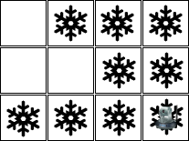

Aspirador de pó em uma casa configurável
Que tal implementar um aspirador de pó que consegue atuar em qualquer casa retangular?
Utilize como exemplo o arquivo src/ProblemSpecificationExample.py para implementar a classe VacuumWorldGeneric.py. O método main da classe VacuumWorldGeneric.py deve receber um arquivo texto que descreve a situação do ambiente e as posições do robô como parâmetros. Por exemplo, para o seguinte ambiente:

O seguinte arquivo de configuração será entregue:
0;1;1;1
0;0;0;0
1;1;1;1
onde 0 significa limpo e 1 sujo.
E o seguinte comando deve ser executado:
python VacuumWorldGeneric.py configuracao.txt 0 0
As ações que o robô (agente) sabe executar são:
- esq: ir para a esquerda;
- dir: ir para a direita;
- baixo: ir para baixo;
- cima: ir para cima;
- limpar: limpar o quarto onde está.
Ao executar o comando acima, o programa deverá gerar uma sequência de ações que fará com que o robô saia do estado inicial e chegue em um estado final válido. Um estado final válido é um estado onde todos os quartos (quadrados) estão limpos.
Uma sequência de ações válida para resolver o estado acima é:
esq; limpar; esq; limpar; esq; baixo; baixo; limpar; dir; limpar; dir; limpar; dir; limpar
Um outro exemplo
Considere um novo exemplo:

Para este exemplo o arquivo de configuração precisa ter este conteúdo:
0;1;1;1
0;0;1;1
1;1;1;1
E a chamada para o programa:
python VacuumWorldGeneric.py configuracao.txt 2 3
O programa que você irá implementar não precisa se preocupar com a validação dos dados de entrada. Assume-se que os dados de entrada estão corretos, por exemplo, a posição do robô é uma posição válida.
A única tarefa que o programa deve fazer é se existir solução então retornar uma sequência de ações ótima para o problema. Se não existir solução então informar que não existe solução.
Formato de entrega
Para a implementação e entrega deste último exercício nós vamos utilizar o Github Classroom. O link para o enunciado é este aqui https://classroom.github.com/a/PVBTYkS_. Através deste link você consegue baixar o repositório e começar a sua codificação.
Sugere-se olhar o arquivo de testes src/test_VacuumWorldGeneric.py para entender quais funções são demandadas pela sua implementação. Sugere-se também antes de submeter a sua solução, executar este arquivo de testes na sua máquina local.
Prazo para a entrega: 01/09/2022 até às 23:00 horas.
Rubrica de avaliação
| Conceito | Descrição |
|---|---|
| A+ | Preencheu os requisitos para A e apresentou uma solução bem projetada e um código bem escrito |
| A | Passou em todos os testes (os testes com número 5 são opcionais) |
| D | Submeteu uma solução, mas a mesma não passou em todos os testes obrigatórios |